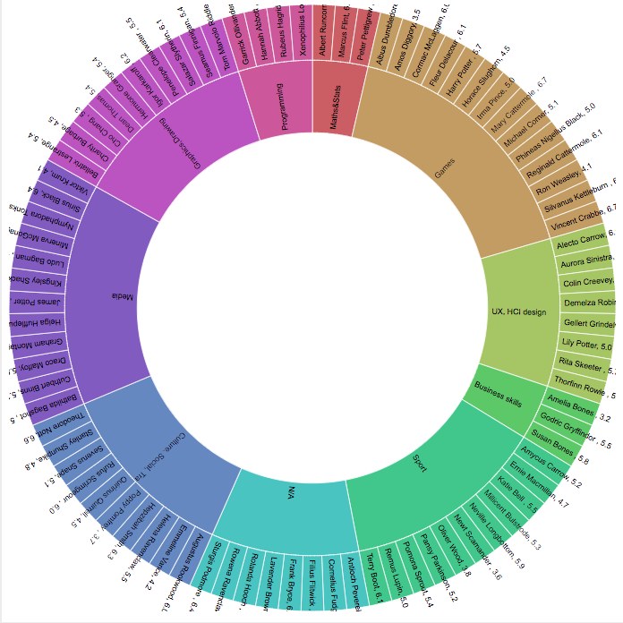

PIPELINE -Method 1
From raw information,
set the group formation rules as followed:
-
students with the same interests will be in the same group
-
if there were more than 9 students with the same interest, picked the students with the highest average skills first. (manually)
-
Students with unidentified interests randomly formed a group of 9
Data transformation and Data Set
-
cleaned and grouped the raw students’ interest into 9 main interests
-
Calculated the average skills of each student
Visual mapping and Visual form
-
uploaded the data set onto Alluvial Diagram at
www.rawgroup.io
which revealed more clearly students interests and their average skills

-
assigned a group to each student manually by interests and average skills and recorded it in excel. Showed 10 groups on sunburst chart as below.
PIPELINE -Method 2
Data transformation and Data Set
-
added 3 extra parameters Male/Female, Senior/Junior and Major
-
ran the data set through GroupEng software that form 10 groups of students based on
-
interests
-
avoided clustered of female/male students
-
distributed the student majors then
-
balanced each group based on skill levels
Visual mapping and Visual form
-
SpiderChart group summary below shows that the 10 groups are balanced
-
Final students and their allocated groups
are showed in the XXX diagram below:
Appendix
-
The following SpiderChart show how each group are balanced. We quickly see that most groups miss skills in visualisation, math and programming.
-
You can see that group 1, 2, 6 are the group that ends up with the top programming skill students.